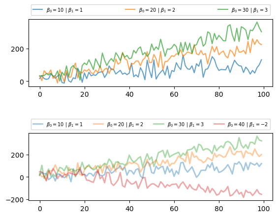

21. ویژگیهای بیشتر زبان#
21.1. مروری کلی#
توصیه ما برای این درس آخر این است که در مرور اول آن را رد کنید، مگر اینکه میل شدیدی به خواندن آن داشته باشید.
این درس اینجاست
به عنوان مرجع، تا بتوانیم در صورت نیاز به آن لینک دهیم، و
برای کسانی که تعدادی از کاربردها را انجام دادهاند و اکنون میخواهند بیشتر درباره زبان Python یاد بگیرند
موضوعات متنوعی در این درس بررسی میشوند، از جمله iteratorها، type hintها، decoratorها و descriptorها، و generatorها.
21.2. Iterableها و Iteratorها#
ما قبلاً چیزهایی درباره تکرار در Python گفتهایم.
اکنون بیایید دقیقتر به نحوه کار آن نگاه کنیم، با تمرکز بر پیادهسازی Python از حلقه for.
21.2.1. Iteratorها#
Iteratorها یک رابط یکنواخت برای حرکت در عناصر یک مجموعه هستند.
در اینجا درباره استفاده از iteratorها صحبت خواهیم کرد — بعداً یاد خواهیم گرفت که چگونه iteratorهای خود را بسازیم.
به طور رسمی، یک iterator یک شیء با متد __next__ است.
به عنوان مثال، اشیاء فایل iterator هستند.
برای دیدن این موضوع، بیایید دوباره به دادههای شهرهای آمریکا نگاه کنیم، که در سلول زیر در دایرکتوری کاری فعلی نوشته شده است
%%file us_cities.txt
new york: 8244910
los angeles: 3819702
chicago: 2707120
houston: 2145146
philadelphia: 1536471
phoenix: 1469471
san antonio: 1359758
san diego: 1326179
dallas: 1223229
Writing us_cities.txt
f = open('us_cities.txt')
f.__next__()
'new york: 8244910\n'
f.__next__()
'los angeles: 3819702\n'
میبینیم که اشیاء فایل واقعاً یک متد __next__ دارند و فراخوانی این متد خط بعدی فایل را برمیگرداند.
متد next همچنین میتواند از طریق تابع داخلی next() قابل دسترسی باشد،
که مستقیماً این متد را فراخوانی میکند
next(f)
'chicago: 2707120\n'
اشیاء بازگردانده شده توسط enumerate() نیز iterator هستند
e = enumerate(['foo', 'bar'])
next(e)
(0, 'foo')
next(e)
(1, 'bar')
همچنین اشیاء reader از ماژول csv.
بیایید یک فایل csv کوچک بسازیم که دادههایی از شاخص NIKKEI را در خود دارد
%%file test_table.csv
Date,Open,High,Low,Close,Volume,Adj Close
2009-05-21,9280.35,9286.35,9189.92,9264.15,133200,9264.15
2009-05-20,9372.72,9399.40,9311.61,9344.64,143200,9344.64
2009-05-19,9172.56,9326.75,9166.97,9290.29,167000,9290.29
2009-05-18,9167.05,9167.82,8997.74,9038.69,147800,9038.69
2009-05-15,9150.21,9272.08,9140.90,9265.02,172000,9265.02
2009-05-14,9212.30,9223.77,9052.41,9093.73,169400,9093.73
2009-05-13,9305.79,9379.47,9278.89,9340.49,176000,9340.49
2009-05-12,9358.25,9389.61,9298.61,9298.61,188400,9298.61
2009-05-11,9460.72,9503.91,9342.75,9451.98,230800,9451.98
2009-05-08,9351.40,9464.43,9349.57,9432.83,220200,9432.83
Writing test_table.csv
from csv import reader
f = open('test_table.csv', 'r')
nikkei_data = reader(f)
next(nikkei_data)
['Date', 'Open', 'High', 'Low', 'Close', 'Volume', 'Adj Close']
next(nikkei_data)
['2009-05-21', '9280.35', '9286.35', '9189.92', '9264.15', '133200', '9264.15']
21.2.2. Iteratorها در حلقههای for#
همه iteratorها میتوانند در سمت راست کلمه کلیدی in در دستورات حلقه for قرار گیرند.
در واقع به این ترتیب است که حلقه for کار میکند: اگر بنویسیم
for x in iterator:
<code block>
آنگاه مفسر
iterator.___next___()را فراخوانی میکند وxرا به نتیجه متصل میکندبلوک کد را اجرا میکند
تکرار میکند تا خطای
StopIterationرخ دهد
بنابراین اکنون میدانید که این نحو جادویی چگونه کار میکند
f = open('somefile.txt', 'r')
for line in f:
# do something
مفسر فقط ادامه میدهد
فراخوانی
f.__next__()و اتصالlineبه نتیجهاجرای بدنه حلقه
این کار تا زمانی که خطای StopIteration رخ دهد، ادامه دارد.
21.2.3. Iterableها#
شما از قبل میدانید که میتوانیم یک لیست Python را در سمت راست in در یک حلقه for قرار دهیم
for i in ['spam', 'eggs']:
print(i)
spam
eggs
پس آیا این یعنی که لیست یک iterator است؟
جواب منفی است
x = ['foo', 'bar']
type(x)
list
next(x)
---------------------------------------------------------------------------
TypeError Traceback (most recent call last)
Cell In[12], line 1
----> 1 next(x)
TypeError: 'list' object is not an iterator
پس چرا میتوانیم روی یک لیست در یک حلقه for تکرار کنیم؟
دلیل این است که یک لیست iterable است (در مقابل یک iterator).
به طور رسمی، یک شیء iterable است اگر بتواند با استفاده از تابع داخلی iter() به یک iterator تبدیل شود.
لیستها یکی از این اشیاء هستند
x = ['foo', 'bar']
type(x)
list
y = iter(x)
type(y)
list_iterator
next(y)
'foo'
next(y)
'bar'
next(y)
---------------------------------------------------------------------------
StopIteration Traceback (most recent call last)
Cell In[17], line 1
----> 1 next(y)
StopIteration:
بسیاری از اشیاء دیگر نیز iterable هستند، مانند دیکشنریها و tupleها.
البته، همه اشیاء iterable نیستند
iter(42)
---------------------------------------------------------------------------
TypeError Traceback (most recent call last)
Cell In[18], line 1
----> 1 iter(42)
TypeError: 'int' object is not iterable
برای نتیجهگیری از بحث ما درباره حلقههای for
حلقههای
forروی iteratorها یا iterableها کار میکنند.در حالت دوم، iterable قبل از شروع حلقه به یک iterator تبدیل میشود.
21.2.4. Iteratorها و توابع داخلی#
برخی از توابع داخلی که روی توالیها عمل میکنند، با iterableها نیز کار میکنند
max()،min()،sum()،all()،any()
به عنوان مثال
x = [10, -10]
max(x)
10
y = iter(x)
type(y)
list_iterator
max(y)
10
یک نکته که باید درباره iteratorها به خاطر بسپارید این است که آنها با استفاده مصرف میشوند
x = [10, -10]
y = iter(x)
max(y)
10
max(y)
---------------------------------------------------------------------------
ValueError Traceback (most recent call last)
Cell In[23], line 1
----> 1 max(y)
ValueError: max() iterable argument is empty
21.3. عملگرهای * و **#
* و ** ابزارهای مناسب و پرکاربردی برای باز کردن لیستها و tupleها و اجازه دادن به کاربران برای تعریف توابعی هستند که تعداد دلخواه آرگومان را به عنوان ورودی میگیرند.
در این بخش، نحوه استفاده از آنها و تمایز موارد استفاده آنها را بررسی خواهیم کرد.
21.3.1. باز کردن آرگومانها#
وقتی روی لیستی از پارامترها عمل میکنیم، اغلب نیاز داریم که محتوای لیست را به عنوان آرگومانهای منفرد به جای یک مجموعه استخراج کنیم هنگام ارسال آنها به توابع.
خوشبختانه، عملگر * میتواند به ما کمک کند تا لیستها و tupleها را به آرگومانهای موضعی در فراخوانی توابع باز کنیم.
برای مشخص کردن مطلب، مثالهای زیر را در نظر بگیرید:
بدون *، تابع print یک لیست را چاپ میکند
l1 = ['a', 'b', 'c']
print(l1)
['a', 'b', 'c']
در حالی که تابع print عناصر منفرد را چاپ میکند چون * لیست را به آرگومانهای منفرد باز میکند
print(*l1)
a b c
باز کردن لیست با استفاده از * به آرگومانهای موضعی معادل تعریف آنها به صورت جداگانه هنگام فراخوانی تابع است
print('a', 'b', 'c')
a b c
با این حال، عملگر * راحتتر است اگر بخواهیم دوباره از آنها استفاده کنیم
l1.append('d')
print(*l1)
a b c d
به طور مشابه، ** برای باز کردن آرگومانها استفاده میشود.
تفاوت این است که ** دیکشنریها را به آرگومانهای کلیدواژهای باز میکند.
** اغلب زمانی استفاده میشود که آرگومانهای کلیدواژهای زیادی وجود دارد که میخواهیم دوباره استفاده کنیم.
به عنوان مثال، فرض کنید میخواهیم چندین نمودار با استفاده از تنظیمات گرافیکی یکسان رسم کنیم، که ممکن است شامل تنظیم مکرر بسیاری از پارامترهای گرافیکی باشد که معمولاً با استفاده از آرگومانهای کلیدواژهای تعریف میشوند.
در این حالت، میتوانیم از یک دیکشنری برای ذخیره این پارامترها استفاده کنیم و از ** برای باز کردن دیکشنریها به آرگومانهای کلیدواژهای در صورت نیاز استفاده کنیم.
بیایید با هم یک مثال ساده را بررسی کنیم و استفاده از * و ** را متمایز کنیم
import numpy as np
import matplotlib.pyplot as plt
# Set up the frame and subplots
fig, ax = plt.subplots(2, 1)
plt.subplots_adjust(hspace=0.7)
# Create a function that generates synthetic data
def generate_data(β_0, β_1, σ=30, n=100):
x_values = np.arange(0, n, 1)
y_values = β_0 + β_1 * x_values + np.random.normal(size=n, scale=σ)
return x_values, y_values
# Store the keyword arguments for lines and legends in a dictionary
line_kargs = {'lw': 1.5, 'alpha': 0.7}
legend_kargs = {'bbox_to_anchor': (0., 1.02, 1., .102),
'loc': 3,
'ncol': 4,
'mode': 'expand',
'prop': {'size': 7}}
β_0s = [10, 20, 30]
β_1s = [1, 2, 3]
# Use a for loop to plot lines
def generate_plots(β_0s, β_1s, idx, line_kargs, legend_kargs):
label_list = []
for βs in zip(β_0s, β_1s):
# Use * to unpack tuple βs and the tuple output from the generate_data function
# Use ** to unpack the dictionary of keyword arguments for lines
ax[idx].plot(*generate_data(*βs), **line_kargs)
label_list.append(f'$β_0 = {βs[0]}$ | $β_1 = {βs[1]}$')
# Use ** to unpack the dictionary of keyword arguments for legends
ax[idx].legend(label_list, **legend_kargs)
generate_plots(β_0s, β_1s, 0, line_kargs, legend_kargs)
# We can easily reuse and update our parameters
β_1s.append(-2)
β_0s.append(40)
line_kargs['lw'] = 2
line_kargs['alpha'] = 0.4
generate_plots(β_0s, β_1s, 1, line_kargs, legend_kargs)
plt.show()

در این مثال، * پارامترهای zip شده βs و خروجی تابع generate_data که در tupleها ذخیره شدهاند را باز کرد،
در حالی که ** پارامترهای گرافیکی ذخیره شده در legend_kargs و line_kargs را باز کرد.
برای خلاصه کردن، زمانی که *list/*tuple و **dictionary به فراخوانی توابع ارسال میشوند، آنها به آرگومانهای منفرد به جای یک مجموعه باز میشوند.
تفاوت این است که * لیستها و tupleها را به آرگومانهای موضعی باز میکند، در حالی که ** دیکشنریها را به آرگومانهای کلیدواژهای باز میکند.
21.3.2. آرگومانهای دلخواه#
زمانی که توابع را تعریف میکنیم، گاهی مطلوب است که به کاربران اجازه دهیم هر تعداد آرگومان که میخواهند را وارد یک تابع کنند.
شاید متوجه شده باشید که تابع ax.plot() میتواند تعداد دلخواهی آرگومان را مدیریت کند.
اگر به مستندات تابع نگاه کنیم، میبینیم تابع به صورت زیر تعریف شده است
Axes.plot(*args, scalex=True, scaley=True, data=None, **kwargs)
دوباره عملگرهای * و ** را در زمینه تعریف تابع یافتیم.
در واقع، *args و **kargs در کتابخانههای علمی در Python همه جا حضور دارند تا افزونگی را کاهش دهند و ورودیهای انعطافپذیر را امکانپذیر کنند.
*args تابع را قادر میسازد تا آرگومانهای موضعی با اندازه متغیر را مدیریت کند
l1 = ['a', 'b', 'c']
l2 = ['b', 'c', 'd']
def arb(*ls):
print(ls)
arb(l1, l2)
(['a', 'b', 'c'], ['b', 'c', 'd'])
ورودیها به تابع ارسال شده و در یک tuple ذخیره میشوند.
بیایید ورودیهای بیشتری را امتحان کنیم
l3 = ['z', 'x', 'b']
arb(l1, l2, l3)
(['a', 'b', 'c'], ['b', 'c', 'd'], ['z', 'x', 'b'])
به طور مشابه، Python به ما اجازه میدهد از **kargs برای ارسال تعداد دلخواه آرگومانهای کلیدواژهای به توابع استفاده کنیم
def arb(**ls):
print(ls)
# Note that these are keyword arguments
arb(l1=l1, l2=l2)
{'l1': ['a', 'b', 'c'], 'l2': ['b', 'c', 'd']}
میبینیم که Python از یک دیکشنری برای ذخیره این آرگومانهای کلیدواژهای استفاده میکند.
بیایید ورودیهای بیشتری را امتحان کنیم
arb(l1=l1, l2=l2, l3=l3)
{'l1': ['a', 'b', 'c'], 'l2': ['b', 'c', 'd'], 'l3': ['z', 'x', 'b']}
به طور کلی، *args و **kargs هنگام تعریف یک تابع استفاده میشوند؛ آنها تابع را قادر میسازند ورودی با اندازه دلخواه بپذیرد.
تفاوت این است که توابع با *args قادر خواهند بود آرگومانهای موضعی با اندازه دلخواه بپذیرند، در حالی که **kargs به توابع اجازه میدهد تعداد دلخواه آرگومانهای کلیدواژهای بپذیرند.
21.4. راهنمای نوع (Type Hints)#
پایتون یک زبان با نوعدهی پویا است، به این معنی که نیازی به اعلان نوع متغیرها ندارید.
(بحث پیشین ما درباره نوعهای پویا در برابر استاتیک را ببینید.)
با این حال، پایتون از راهنمای نوع (type hints) اختیاری (که به آن حاشیهنویسی نوع نیز گفته میشود) پشتیبانی میکند که به شما امکان میدهد نوعهای مورد انتظار متغیرها، پارامترهای تابع، و مقادیر بازگشتی را مشخص کنید.
راهنمای نوع از پایتون ۳.۵ معرفی شد و در نسخههای بعدی تکامل یافت. تمام نحو نشاندادهشده در اینجا در پایتون ۳.۹ و بعد از آن کار میکند.
Note
راهنمای نوع در زمان اجرا توسط مفسر پایتون نادیده گرفته میشود — آنها بر نحوه اجرای کد شما تأثیری ندارند. آنها صرفاً اطلاعاتی هستند و به عنوان مستندات برای انسانها و ابزارها عمل میکنند.
21.4.1. نحو پایه#
راهنمای نوع از دونقطه : برای حاشیهنویسی متغیرها و پارامترها، و از پیکان -> برای حاشیهنویسی نوعهای بازگشتی استفاده میکند.
در اینجا یک مثال ساده آمده است:
def greet(name: str, times: int) -> str:
return (name + '! ') * times
greet('hello', 3)
'hello! hello! hello! '
در این تعریف تابع:
name: strنشان میدهد کهnameانتظار میرود یک رشته باشدtimes: intنشان میدهد کهtimesانتظار میرود یک عدد صحیح باشد-> strنشان میدهد که تابع یک رشته برمیگرداند
همچنین میتوانید متغیرها را مستقیماً حاشیهنویسی کنید:
x: int = 10
y: float = 3.14
name: str = 'Python'
21.4.2. نوعهای رایج#
پرکاربردترین راهنمای نوع، نوعهای داخلی (built-in) هستند:
نوع |
مثال |
|---|---|
|
|
|
|
|
|
|
|
|
|
|
|
برای ظروف (containers)، میتوانید نوعهای عناصر آنها را مشخص کنید:
prices: list[float] = [9.99, 4.50, 2.89]
counts: dict[str, int] = {'apples': 3, 'oranges': 5}
21.4.3. راهنماها نوعها را اجبار نمیکنند#
یک نکته مهم برای برنامهنویسان جدید پایتون: راهنمای نوع در زمان اجرا اجبار نمیشوند.
پایتون در صورت ارسال نوع «اشتباه» خطایی ایجاد نمیکند:
def add(x: int, y: int) -> int:
return x + y
# Passes floats — Python doesn't complain
add(1.5, 2.7)
4.2
راهنماها میگویند int، اما پایتون با خوشحالی آرگومانهای float را میپذیرد و 4.2 برمیگرداند — که آن هم int نیست.
این تفاوت کلیدی با زبانهای با نوعدهی ایستا مانند C یا Java است، که در آنها عدم تطابق نوعها باعث خطاهای کامپایل میشود.
21.4.4. چرا از راهنمای نوع استفاده کنیم؟#
اگر پایتون آنها را نادیده میگیرد، چرا زحمت بکشیم؟
خوانایی: راهنمای نوع امضای تابع را خوددستنویس (self-documenting) میکند. خواننده فوراً میداند که یک تابع چه نوعهایی را انتظار دارد و چه نوعهایی برمیگرداند.
پشتیبانی ویرایشگر: IDEهایی مانند VS Code از راهنمای نوع برای ارائه تکمیل خودکار بهتر، تشخیص خطا، و مستندات درخطی استفاده میکنند.
بررسی خطا: ابزارهایی مانند mypy و pyrefly راهنمای نوع را تجزیهوتحلیل میکنند تا اشکالات را قبل از اجرای کد شناسایی کنند.
کد تولیدشده توسط LLM: مدلهای زبانی بزرگ اغلب کدی با راهنمای نوع تولید میکنند، بنابراین درک نحو به شما کمک میکند خروجی آنها را بخوانید و استفاده کنید.
21.4.5. راهنمای نوع در پایتون علمی#
راهنمای نوع به بحث نیاز به سرعت ارتباط دارد:
کتابخانههای پرکارایی مانند JAX و Numba برای کامپایل کد ماشین سریع به دانستن نوع متغیرها متکی هستند.
در حالی که این کتابخانهها نوعها را در زمان اجرا استنتاج میکنند نه اینکه مستقیماً راهنمای نوع پایتون را بخوانند، مفهوم یکسان است — اطلاعات صریح نوع، بهینهسازی را ممکن میسازد.
با تکامل اکوسیستم پایتون، انتظار میرود ارتباط بین راهنمای نوع و ابزارهای کارایی بیشتر شود.
در حال حاضر، مزیت اصلی راهنمای نوع در پایتون روزمره وضوح و پشتیبانی ابزار است، که با افزایش اندازه برنامهها ارزش آن بیشتر میشود.
21.5. Decoratorها و Descriptorها#
بیایید به برخی از عناصر نحوی خاص نگاه کنیم که به طور معمول توسط توسعهدهندگان Python استفاده میشوند.
ممکن است بلافاصله به مفاهیم زیر نیاز نداشته باشید، اما آنها را در کد دیگران خواهید دید.
از این رو در مرحلهای از آموزش Python خود باید آنها را درک کنید.
21.5.1. Decoratorها#
Decoratorها کمی نحو شیرین هستند که، اگرچه به راحتی قابل اجتناب هستند، محبوب شدهاند.
بسیار آسان است بگوییم که decoratorها چه کاری انجام میدهند.
از طرف دیگر توضیح اینکه چرا ممکن است از آنها استفاده کنید، کمی تلاش میطلبد.
21.5.1.1. یک مثال#
فرض کنید روی برنامهای کار میکنیم که شبیه این است
import numpy as np
def f(x):
return np.log(np.log(x))
def g(x):
return np.sqrt(42 * x)
# Program continues with various calculations using f and g
اکنون فرض کنید مشکلی وجود دارد: گاهی اوقات اعداد منفی به f و g در محاسباتی که دنبال میشود، وارد میشوند.
اگر امتحان کنید، خواهید دید که وقتی این توابع با اعداد منفی فراخوانی میشوند، یک شیء NumPy به نام nan را برمیگردانند.
این مخفف “not a number” است (و نشان میدهد که شما در حال ارزیابی یک تابع ریاضی در نقطهای هستید که تعریف نشده است).
شاید این همان چیزی نیست که میخواهیم، زیرا مشکلات دیگری را ایجاد میکند که بعداً سخت قابل تشخیص هستند.
فرض کنید به جای آن میخواهیم برنامه هر زمان که این اتفاق میافتد خاتمه یابد، با یک پیام خطای معقول.
این تغییر به اندازه کافی آسان برای پیادهسازی است
import numpy as np
def f(x):
assert x >= 0, "Argument must be nonnegative"
return np.log(np.log(x))
def g(x):
assert x >= 0, "Argument must be nonnegative"
return np.sqrt(42 * x)
# Program continues with various calculations using f and g
با این حال متوجه شوید که اینجا کمی تکرار وجود دارد، به شکل دو خط یکسان کد.
تکرار کد ما را طولانیتر و سختتر برای نگهداری میکند، و از این رو چیزی است که سخت تلاش میکنیم از آن اجتناب کنیم.
اینجا مشکل بزرگی نیست، اما حالا تصور کنید به جای فقط f و g، ما 20 تابع داریم که باید دقیقاً به همین شکل تغییر کنیم.
این یعنی باید منطق تست (یعنی خط assert که غیرمنفی بودن را تست میکند) را 20 بار تکرار کنیم.
وضعیت حتی بدتر است اگر منطق تست طولانیتر و پیچیدهتر باشد.
در این نوع سناریو رویکرد زیر منظمتر خواهد بود
import numpy as np
def check_nonneg(func):
def safe_function(x):
assert x >= 0, "Argument must be nonnegative"
return func(x)
return safe_function
def f(x):
return np.log(np.log(x))
def g(x):
return np.sqrt(42 * x)
f = check_nonneg(f)
g = check_nonneg(g)
# Program continues with various calculations using f and g
این پیچیده به نظر میرسد، پس بیایید آرام آرام روی آن کار کنیم.
برای باز کردن منطق، در نظر بگیرید چه اتفاقی میافتد وقتی میگوییم f = check_nonneg(f).
این تابع check_nonneg را با پارامتر func برابر با f فراخوانی میکند.
اکنون check_nonneg یک تابع جدید به نام safe_function ایجاد میکند که
x را به عنوان غیرمنفی تأیید میکند و سپس func را روی آن فراخوانی میکند (که همان f است).
در نهایت، نام سراسری f برابر با safe_function قرار میگیرد.
اکنون رفتار f همانطور که میخواهیم است، و همینطور برای g.
در عین حال، منطق تست فقط یک بار نوشته شده است.
21.5.1.2. decoratorها وارد میشوند#
نسخه آخر کد ما هنوز ایدهآل نیست.
به عنوان مثال، اگر کسی کد ما را بخواند و بخواهد بداند که
f چگونه کار میکند، به دنبال تعریف تابع خواهد گشت، که این است
def f(x):
return np.log(np.log(x))
ممکن است خط f = check_nonneg(f) را از دست بدهند.
به این و دلایل دیگر، decoratorها به Python معرفی شدند.
با decoratorها، میتوانیم خطوط
def f(x):
return np.log(np.log(x))
def g(x):
return np.sqrt(42 * x)
f = check_nonneg(f)
g = check_nonneg(g)
را با
@check_nonneg
def f(x):
return np.log(np.log(x))
@check_nonneg
def g(x):
return np.sqrt(42 * x)
جایگزین کنیم
این دو قطعه کد دقیقاً همان کار را انجام میدهند.
اگر همان کار را انجام میدهند، آیا واقعاً به نحو decorator نیاز داریم؟
خب، توجه کنید که decoratorها دقیقاً بالای تعاریف تابع قرار دارند.
بنابراین هر کسی که به تعریف تابع نگاه میکند، آنها را خواهد دید و از اینکه تابع تغییر یافته است، آگاه خواهد شد.
به نظر بسیاری از افراد، این نحو decorator را به یک بهبود قابل توجه برای زبان تبدیل میکند.
21.5.2. Descriptorها#
Descriptorها مشکل رایجی را در مورد مدیریت متغیرها حل میکنند.
برای درک موضوع، یک کلاس Car را در نظر بگیرید که یک ماشین را شبیهسازی میکند.
فرض کنید این کلاس متغیرهای miles و kms را تعریف میکند که به ترتیب فاصله طی شده به مایل
و کیلومتر را نشان میدهند.
یک نسخه بسیار سادهشده از کلاس ممکن است به شکل زیر باشد
class Car:
def __init__(self, miles=1000):
self.miles = miles
self.kms = miles * 1.61
# Some other functionality, details omitted
یک مشکل احتمالی که ممکن است اینجا داشته باشیم این است که کاربر یکی از این متغیرها را تغییر دهد اما دیگری را نه
car = Car()
car.miles
1000
car.kms
1610.0
car.miles = 6000
car.kms
1610.0
در دو خط آخر میبینیم که miles و kms همگام نیستند.
آنچه واقعاً میخواهیم یک مکانیسم است که به موجب آن هر زمان که کاربر یکی از این متغیرها را تنظیم میکند، دیگری به طور خودکار بهروز شود.
21.5.2.1. یک راهحل#
در Python، این موضوع با استفاده از descriptorها حل میشود.
یک descriptor فقط یک شیء Python است که متدهای خاصی را پیادهسازی میکند.
این متدها زمانی فعال میشوند که شیء از طریق نشانهگذاری ویژگی نقطهدار قابل دسترسی باشد.
بهترین راه برای درک این موضوع دیدن آن در عمل است.
این نسخه جایگزین از کلاس Car را در نظر بگیرید
class Car:
def __init__(self, miles=1000):
self._miles = miles
self._kms = miles * 1.61
def set_miles(self, value):
self._miles = value
self._kms = value * 1.61
def set_kms(self, value):
self._kms = value
self._miles = value / 1.61
def get_miles(self):
return self._miles
def get_kms(self):
return self._kms
miles = property(get_miles, set_miles)
kms = property(get_kms, set_kms)
ابتدا بیایید بررسی کنیم که رفتار مورد نظر را دریافت میکنیم
car = Car()
car.miles
1000
car.miles = 6000
car.kms
9660.0
بله، این همان چیزی است که میخواهیم — car.kms به طور خودکار بهروز میشود.
21.5.2.2. چگونه کار میکند#
نامهای _miles و _kms نامهای دلخواهی هستند که برای ذخیره مقادیر متغیرها استفاده میکنیم.
اشیاء miles و kms propertyها هستند، نوع رایجی از descriptor.
متدهای get_miles، set_miles، get_kms و set_kms تعریف
میکنند که چه اتفاقی میافتد وقتی این متغیرها را دریافت (یعنی دسترسی) یا تنظیم (اتصال) میکنید
متدهای به اصطلاح “getter” و “setter”.
تابع داخلی Python به نام property متدهای getter و setter را میگیرد و یک property ایجاد میکند.
به عنوان مثال، بعد از اینکه car به عنوان یک نمونه از Car ایجاد شد، شیء car.miles یک property است.
به عنوان یک property، وقتی مقدار آن را از طریق car.miles = 6000 تنظیم میکنیم، متد setter
آن فعال میشود — در این مورد set_miles.
21.5.2.3. decoratorها و propertyها#
این روزها بسیار رایج است که تابع property را از طریق یک decorator ببینید.
اینجا نسخه دیگری از کلاس Car ما است که مانند قبل کار میکند اما حالا از
decoratorها برای تنظیم propertyها استفاده میکند
class Car:
def __init__(self, miles=1000):
self._miles = miles
self._kms = miles * 1.61
@property
def miles(self):
return self._miles
@property
def kms(self):
return self._kms
@miles.setter
def miles(self, value):
self._miles = value
self._kms = value * 1.61
@kms.setter
def kms(self, value):
self._kms = value
self._miles = value / 1.61
از همه جزئیات اینجا نمیگذریم.
برای اطلاعات بیشتر میتوانید به مستندات descriptor مراجعه کنید.
21.6. Generatorها#
یک generator نوعی iterator است (یعنی با تابع next کار میکند).
دو راه برای ساخت generatorها مطالعه خواهیم کرد: عبارات generator و توابع generator.
21.6.1. عبارات generator#
سادهترین راه برای ساخت generatorها استفاده از عبارات generator است.
درست مانند list comprehension، اما با پرانتز گرد.
اینجا list comprehension است:
singular = ('dog', 'cat', 'bird')
type(singular)
tuple
plural = [string + 's' for string in singular]
plural
['dogs', 'cats', 'birds']
type(plural)
list
و اینجا عبارت generator است
singular = ('dog', 'cat', 'bird')
plural = (string + 's' for string in singular)
type(plural)
generator
next(plural)
'dogs'
next(plural)
'cats'
next(plural)
'birds'
از آنجایی که sum() میتواند روی iteratorها فراخوانی شود، میتوانیم این کار را انجام دهیم
sum((x * x for x in range(10)))
285
تابع sum() برای دریافت آیتمها، next() را فراخوانی میکند و جملات متوالی را جمع میکند.
در واقع، میتوانیم در این مورد پرانتزهای بیرونی را حذف کنیم
sum(x * x for x in range(10))
285
21.6.2. توابع generator#
انعطافپذیرترین راه برای ایجاد اشیاء generator استفاده از توابع generator است.
بیایید به چند مثال نگاه کنیم.
21.6.2.1. مثال 1#
اینجا یک مثال بسیار ساده از یک تابع generator است
def f():
yield 'start'
yield 'middle'
yield 'end'
شبیه یک تابع به نظر میرسد، اما از کلمه کلیدی yield استفاده میکند که قبلاً با آن آشنا نشدهایم.
بیایید ببینیم بعد از اجرای این کد چگونه کار میکند
type(f)
function
gen = f()
gen
<generator object f at 0x7fdaebce0880>
next(gen)
'start'
next(gen)
'middle'
next(gen)
'end'
next(gen)
---------------------------------------------------------------------------
StopIteration Traceback (most recent call last)
Cell In[66], line 1
----> 1 next(gen)
StopIteration:
تابع generator f() برای ایجاد اشیاء generator استفاده میشود (در این مورد gen).
Generatorها iterator هستند، زیرا از متد next پشتیبانی میکنند.
اولین فراخوانی next(gen)
کد در بدنه
f()را تا زمانی که با دستورyieldمواجه شود، اجرا میکند.آن مقدار را به فراخواننده
next(gen)برمیگرداند.
فراخوانی دوم next(gen) از خط بعدی شروع به اجرا میکند
def f():
yield 'start'
yield 'middle' # This line!
yield 'end'
و تا دستور yield بعدی ادامه میدهد.
در آن نقطه مقدار بعد از yield را به فراخواننده next(gen) برمیگرداند، و غیره.
وقتی بلوک کد تمام میشود، generator یک خطای StopIteration پرتاب میکند.
21.6.2.2. مثال 2#
مثال بعدی ما یک آرگومان x را از فراخواننده دریافت میکند
def g(x):
while x < 100:
yield x
x = x * x
بیایید ببینیم چگونه کار میکند
g
<function __main__.g(x)>
gen = g(2)
type(gen)
generator
next(gen)
2
next(gen)
4
next(gen)
16
next(gen)
---------------------------------------------------------------------------
StopIteration Traceback (most recent call last)
Cell In[74], line 1
----> 1 next(gen)
StopIteration:
فراخوانی gen = g(2) ، gen را به یک generator متصل میکند.
در داخل generator، نام x به 2 متصل است.
وقتی next(gen) را فراخوانی میکنیم
بدنه
g()تا خطyield xاجرا میشود و مقدارxبرگردانده میشود.
توجه کنید که مقدار x در داخل generator حفظ میشود.
وقتی دوباره next(gen) را فراخوانی میکنیم، اجرا از جایی که متوقف شده بود ادامه مییابد
def g(x):
while x < 100:
yield x
x = x * x # execution continues from here
وقتی x < 100 شکست میخورد، generator یک خطای StopIteration پرتاب میکند.
اتفاقاً، حلقه داخل generator میتواند بینهایت باشد
def g(x):
while 1:
yield x
x = x * x
21.6.3. مزایای iteratorها#
مزیت استفاده از iterator اینجا چیست؟
فرض کنید میخواهیم از یک binomial(n,0.5) نمونه بگیریم.
یک راه برای انجام آن به شرح زیر است
import random
n = 10000000
draws = [random.uniform(0, 1) < 0.5 for i in range(n)]
sum(draws)
5000000
اما ما در حال ایجاد دو لیست بزرگ هستیم، range(n) و draws.
این از حافظه زیادی استفاده میکند و بسیار کند است.
اگر n را حتی بزرگتر کنیم، این اتفاق میافتد
n = 100000000
draws = [random.uniform(0, 1) < 0.5 for i in range(n)]
میتوانیم با استفاده از iteratorها از این مشکلات اجتناب کنیم.
اینجا تابع generator است
def f(n):
i = 1
while i <= n:
yield random.uniform(0, 1) < 0.5
i += 1
حالا بیایید جمع را انجام دهیم
n = 10000000
draws = f(n)
draws
<generator object f at 0x7fdaebd04790>
sum(draws)
4996489
خلاصه، iterableها
نیاز به ایجاد لیستها/tupleهای بزرگ را از بین میبرند، و
یک رابط یکنواخت برای تکرار فراهم میکنند که میتواند به صورت شفاف در حلقههای
forاستفاده شود
21.7. تمرینها#
Exercise 21.1
کد زیر را کامل کنید و آن را با استفاده از این فایل csv تست کنید، که فرض میکنیم آن را در دایرکتوری کاری فعلی خود قرار دادهاید
def column_iterator(target_file, column_number):
"""A generator function for CSV files.
When called with a file name target_file (string) and column number
column_number (integer), the generator function returns a generator
that steps through the elements of column column_number in file
target_file.
"""
# put your code here
dates = column_iterator('test_table.csv', 1)
for date in dates:
print(date)
Solution to Exercise 21.1
یک راهحل به شرح زیر است
def column_iterator(target_file, column_number):
"""A generator function for CSV files.
When called with a file name target_file (string) and column number
column_number (integer), the generator function returns a generator
which steps through the elements of column column_number in file
target_file.
"""
f = open(target_file, 'r')
for line in f:
yield line.split(',')[column_number - 1]
f.close()
dates = column_iterator('test_table.csv', 1)
i = 1
for date in dates:
print(date)
if i == 10:
break
i += 1
Date
2009-05-21
2009-05-20
2009-05-19
2009-05-18
2009-05-15
2009-05-14
2009-05-13
2009-05-12
2009-05-11